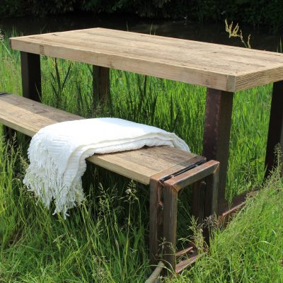
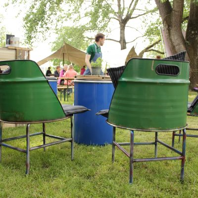
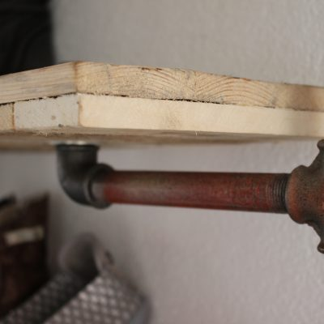

Persoonlijk, creatief en veelzijdig. Rongewoon maakt meubels op maat in Drachten – van steigerhouten tafel tot loungestoel van een oliedrum.
Meubel aanvragen ContactTafels met bankje van steigerhout op een stalen onderstel, in elke maat.
Stoere salontafels op maat, passend bij jouw interieur.
Loungestoel ‘Boston’ en meer meubels op basis van een oliedrum.
Industriële kapstokken van hout en buis.
Een oude kast omgetoverd tot een uniek vintage meubel.
Samen een idee uitwerken – van materiaal tot kleuradvies.



“Hij luistert naar mijn ideeën en wensen, bekijkt de mogelijkheden en adviseert. Het eindresultaat is super, mooier dan ik had verwacht.”
Lisanne
“Persoonlijk en net iets anders dan anders!”
David
“Een oude bruine kast is door Ron omgetoverd tot een prachtig vintage meubel.”
Christa
Elk meubel begint met een persoonlijk en vrijblijvend gesprek bij jou thuis. Tijdens dat gesprek krijgt het meubel zijn vorm, met een no-nonsens “samen komen we er wel uit”-mentaliteit – en met oog voor je wensen én je budget.
Vertel wat je zoekt; Ron neemt contact op voor een vrijblijvend gesprek.
De Excelsior 33, 9207 DB Drachten
Tel. 06-46338118
ron@rongewoon.nl
Op afspraak – neem gerust contact op.
Drachten – levering door heel Nederland